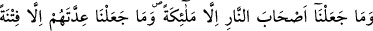
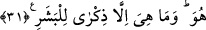

RABBİNİN ORDULARINI,
KENDİSİNDEN BAŞKASI BİLMEZ
31. Biz cehennemin işlerine bakmakla ancak melekleri görevlendirmişizdir.
Onların sayısını da inkârcılar için sâdece bir imtihan (vesilesi) yaptık ki, böylelikle,
kendilerine kitap verilenler iyiden iyiye öğrensin, îman edenlerin îmânını arttırsın;
hem kendilerine kitap verilenler hem müminler şüpheye düşmesinler, kalplerinde
hastalık bulunanlar ve kâfirler de: «Allah bu misalle ne demek istemiştir ki?»
desinler. İşte Allah böylece, dilediğini sapıklıkta bırakır, dilediğini doğru yola
eriştirir. Rabbinin ordularını, kendisinden başkası bilmez. Bu ise, insanlık için ancak
bir öğüttür.
“Biz cehennemin işlerine bakmakla” orada bulunanlara azap vermekle “ancak
melekleri görevlendirmişizdir.” “Cehennemin işlerine bakmakla görevli” anlamına
âyette “ashâbu’n-nâr” ifâdesi kullanılmaktadır. Bu ifâdenin anlamıyla Haşr sûresinde
yirminci âyette yer alan “ashâbu’n-nâr” ifâdesi aynı anlama değildir. Orada Allah;
“Cehennem ehli ile Cennet ehli bir olmaz.” (el-Haşr, 59/20) buyurmaktadır. Şu hâlde
Haşr sûresindeki “ashabun nar” cehennem ehli anlamına gelirken buradaki “ashabun
nar” “cehennem işlerini görmekle yükümlü melek” anlamına gelmektedir.
Keşfu’l-esrar’da tefsirini yaptığımız bu âyet-i kerîme; muzâaf takdir edilerek tefsir
edilmiştir. Ancak bu tefsir âyetin anlamından uzaktır. Çünkü “ashâbu’n-nar” cehennemin
bekçileri olan meleklerdir. Yoksa bunlar oradaki meleklerin bekçileri değillerdir.
Cehennemin işine bakmakla sâdece meleklerin gönderilmesi orada azap gören
insanlarla cinlerden ayrı bir cins olmalarını temin etmek içindir. Dolayısıyla bu
melekler onlara asla merhamet etmezler ve hiç meyletmezler. Çünkü aynı cinsten olanın
şefkat göstermesi daha çok muhtemeldir. İşte bu sebebten dolayıdır ki Peygamber (s.a.)
Efendimiz bizlere merhamet etsin, diye bizim cinsimizden bir beşer olarak
gönderilmiştir.